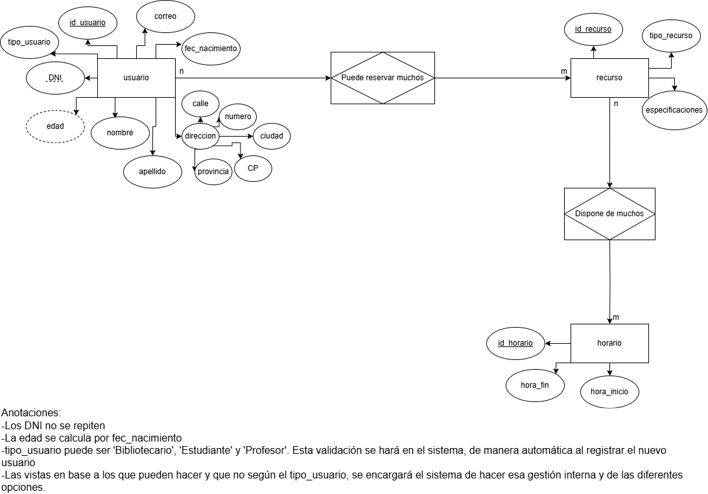
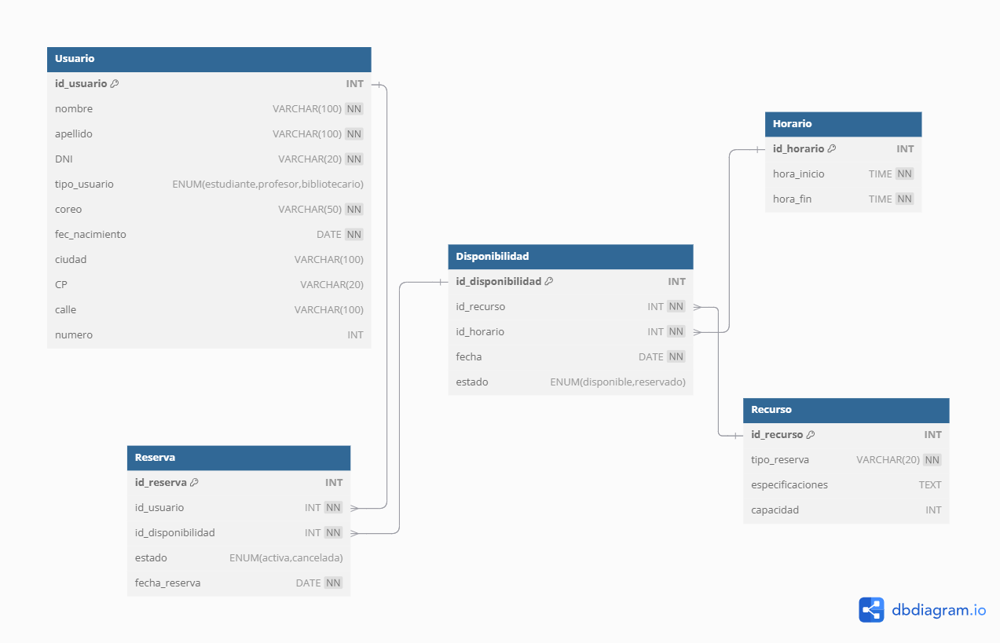

El diseño de una base de datos es un proceso fundamental para garantizar su eficiencia, integridad y facilidad de mantenimiento. Un buen diseño reduce redundancias, mejora la organización de los datos y facilita las consultas.
Antes de diseñar una base de datos, es necesario comprender las necesidades del sistema. Algunas preguntas clave incluyen:
Se crea un modelo de alto nivel de la base de datos utilizando diagramas entidad-relación (DER). En este modelo se definen:
El **Diagrama Entidad-Relación** (DER) usa símbolos gráficos para representar la estructura de la base de datos. A continuación, se muestra un cuadro con los principales elementos:
| Símbolo | Descripción | Ejemplo |
|---|---|---|
| 📦 Entidad | Representa un objeto real del sistema (ejemplo: Cliente, Producto). | [Cliente] |
| 🔑 Clave Primaria | Atributo único que identifica a cada entidad. | id_cliente (PK) |
| 🔗 Relación | Vincula dos entidades. | Cliente --- Realiza ---> Pedido |
| ⚡ Atributo | Propiedad de una entidad. | nombre, edad, dirección |
| 🔄 Cardinalidad | Define el número de relaciones entre entidades. | 1 a 1, 1 a muchos, muchos a muchos |
| 🟠 Entidad Débil | No tiene clave primaria propia y depende de otra entidad. | Factura (depende de Pedido) |
Diseño de una base de datos para reservar recursos a los diferentes usuario en una universidad.
Se traduce el modelo conceptual en un esquema más detallado utilizando el modelo relacional. En esta etapa se definen:
Diseño de una base de datos para reservar recursos a los diferentes usuario en una universidad.
La normalización es el proceso de organizar los datos para reducir redundancias y mejorar la consistencia. Las formas normales incluyen:
Se implementa el modelo lógico en un sistema de gestión de bases de datos (SGBD), definiendo aspectos como:
Diseño de una base de datos para reservar recursos a los diferentes usuario en una universidad.
CREATE TABLE Usuario(
nombre VARCHAR(100) NOT NULL,
apellido VARCHAR(100) NOT NULL,
DNI VARCHAR(20) not NULL UNIQUE,
id_usuario INT AUTO_INCREMENT,
tipo_usuario ENUM('estudiante', 'profesor', 'bibliotecario'),
coreo VARCHAR(50) NOT NULL UNIQUE,
fec_nacimiento DATE NOT NULL,
ciudad VARCHAR(100),
CP VARCHAR(20),
calle VARCHAR(100),
numero INT,
PRIMARY KEY(id_usuario)
);
CREATE TABLE Recurso(
id_recurso INT AUTO_INCREMENT,
tipo_reserva VARCHAR(20) NOT NULL,
especificaciones TEXT,
capacidad INT,
PRIMARY KEY(id_recurso)
);
CREATE TABLE Horario(
id_horario INT AUTO_INCREMENT,
hora_inicio TIME NOT NULL,
hora_fin TIME NOT NULL,
PRIMARY KEY(id_horario)
);
CREATE Disponibilidad(
id_disponibilidad INT AUTO_INCREMENT,
id_recurso INT NOT NULL,
id_horario INT NOT NULL,
fecha DATE NOT NULL,
estado ENUM('disponible', 'reservado') DEFAULT 'disponible',
PRIMARY KEY(id_disponibilidad),
FOREIGN KEY (id_recurso) REFERENCES Recurso(id_recurso),
FOREIGN KEY (id_horario) REFERENCES Horario(id_horario)
);
CREATE TABLE Reserva(
id_reserva INT AUTO_INCREMENT,
id_usuario INT NOT NULL,
estado ENUM('activa', 'cancelada') DEFAULT 'activa',
fecha_reserva DATE NOT NULL,
PRIMARY KEY(id_reserva),
FOREIGN KEY (id_disponibilidad) REFERENCES Disponibilidad(id_disponibilidad),
FOREIGN KEY (id_usuario) REFERENCES Usuario(id_usuario)
);
Las claves primarias garantizan la unicidad de los registros, mientras que las claves foráneas aseguran la integridad referencial entre tablas.
Los índices optimizan la velocidad de búsqueda en tablas con grandes volúmenes de datos.
Un diseño bien estructurado reduce la duplicación de datos, mejorando la consistencia y eficiencia.
Las vistas simplifican las consultas y los procedimientos almacenados mejoran la eficiencia del sistema.